The I3C bus is a two-wire serial single-ended multi-drop bus designed to improve upon the traditional I2C bus. The I3C interface handles communication between this device and other devices connected on the I3C bus. As a master device, it enhances the functionality of the I2C interface while maintaining a degree of backward compatibility.
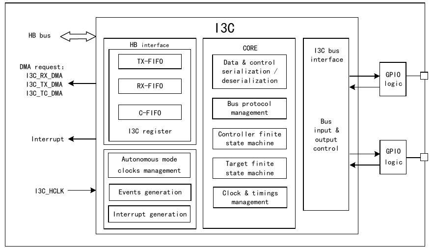
The I3C peripheral operates only as an I3C master. Under any circumstances, the peripheral is in one of the following states:
In this section, we provide the complete programming sequence for the I3C peripheral as a master, covering state transitions, main subtasks, and conditions.
Master initialization
When the master is in the disabled state (EN bit in R32_I3C_CFGR register is 0), software must follow these steps for initialization:
Initiating master-initiated frame transfer
When the master is in the enabled state (EN bit in R32_I3C_CFGR register is 1), software can initiate a frame transfer using any of the following configuration methods:
Regardless of the initiation method, the I3C peripheral then switches to the active state. When the control word is not the last message of the I3C frame (i.e., the MEND bit in the R32_I3C_CTLR register is not set), and no transfer error has occurred (i.e., the ERRF bit in the R32_I3C_EVR register is set to 1), the hardware will continuously request the next control word and continue executing the frame transfer:
Initiating and receiving slave-initiated transfers
When the master is in the enabled state (EN bit in R32_I3C_CFGR register is 1), the master can initiate transfers, and slaves can also initiate transfers by issuing a start request (driving SDA low), provided that the master has allowed hot-join requests, IBI requests, or master-role requests through the R32_I3C_DEVR0 register.
Executing master-initiated frame transfer
On the bus, the master continuously executes frame transfers until the last message transfer is completed (FCF bit in R32_I3C_EVR register is 1), or a transfer error occurs (ERRF bit in R32_I3C_EVR register is 1), and the corresponding interrupt is triggered (if enabled). This process relies on the R32_I3C_CTLR and R32_I3C_TDW/TDR registers (explicitly written by software or automatically pushed by the assigned DMA channel) and R32_I3C_RDW/RDR (explicitly read by software or by the assigned DMA channel). After the transfer is completed, the I3C master returns to the idle state.
Updating master transfer configuration
After returning to the idle state, software can update the I3C peripheral configuration before the next transfer:
Master receiving (broadcast CCC, direct read/write CCC, or private read/write) messages
When the slave is in the idle state (EN bit in R32_I3C_CFGR register is 1), it indicates that it is ready to receive communication messages from the master on the I3C bus, and is ready to switch to the active state.
In the active state, the slave first receives the broadcast ENTDAA CCC (possibly after receiving the optional broadcast ENEC/DISEC CCC), and is then assigned a dynamic address. The DAUPF event in the R32_I3C_EVR register is set to 1, and the corresponding interrupt is generated (if enabled), after which the slave returns to the idle state.
After that, the slave in the idle state is ready to receive any other broadcast CCC messages, direct read/write CCC, or private read/write messages from the master.
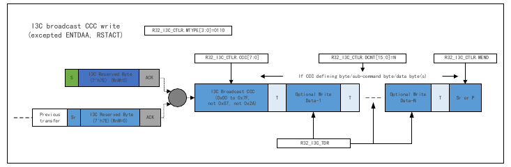
When the peripheral acts as a master, it supports I3C broadcast CCC write (except ENTDAA and RSTACT), I3C direct CCC write (except RSTACT, first part and n× second part), and I3C direct CCC read (except RSTACT, first part and n× second part). The control word configuration uses MTYPE[3:0]=0110 for the first part (broadcast/direct CCC) and MTYPE[3:0]=0011 for the second part (direct addressing of individual slaves).
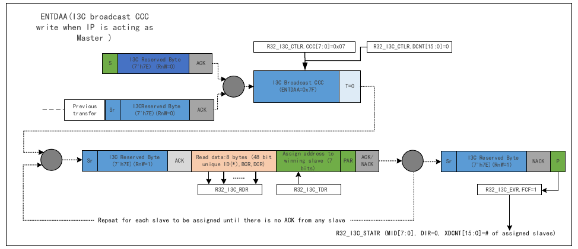
The ENTDAA broadcast CCC is used for dynamic address assignment. The master issues the broadcast ENTDAA CCC (0x7F) with DCNT=0. The process is repeated for each slave to be assigned until there is no ACK from any slave. During each iteration, the master reads 8 bytes (48-bit unique ID, BCR, DCR) from the winning slave, then assigns a dynamic address. The 48-bit unique/provisioned ID is subject to arbitration; the slave that wins arbitration continues to provide its BCR and DCR.
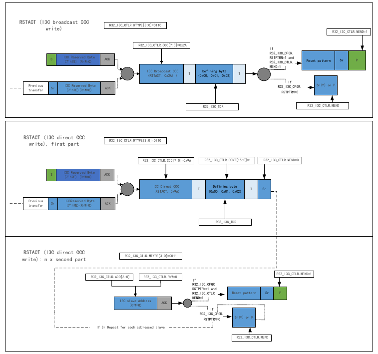
The RSTACT CCC is used to reset the activity state of target devices. It can be issued as a broadcast CCC write (0x2A) or a direct CCC write/read (0x9A), with a defining byte (0x00, 0x01, or 0x02). When R32_I3C_CFGR.RSTPTRN=1 and R32_I3C_CTLR.MEND=1, a reset pattern is inserted before the stop condition. The direct version consists of a first part (addressing the CCC) and an n× second part (addressing each individual slave).
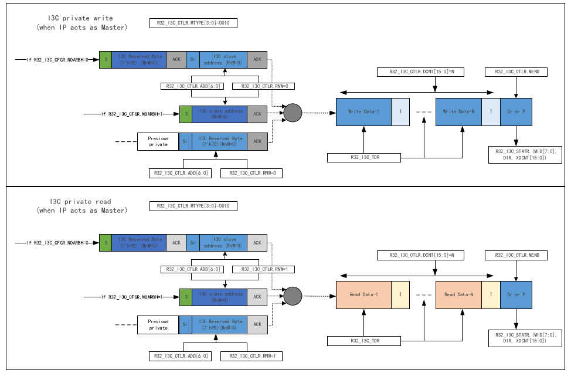
When the peripheral acts as a master, I3C private write and private read transfers use MTYPE[3:0]=0010. If R32_I3C_CFGR.NOARBH=0, an arbitrable header (7'h7E, RnW=0) is issued after the start condition, followed by a repeated start and the I3C slave address. If NOARBH=1, the slave address is issued directly after the start condition without the arbitrable header. The control word includes ADD[6:0], RNW, DCNT[15:0], and MEND.
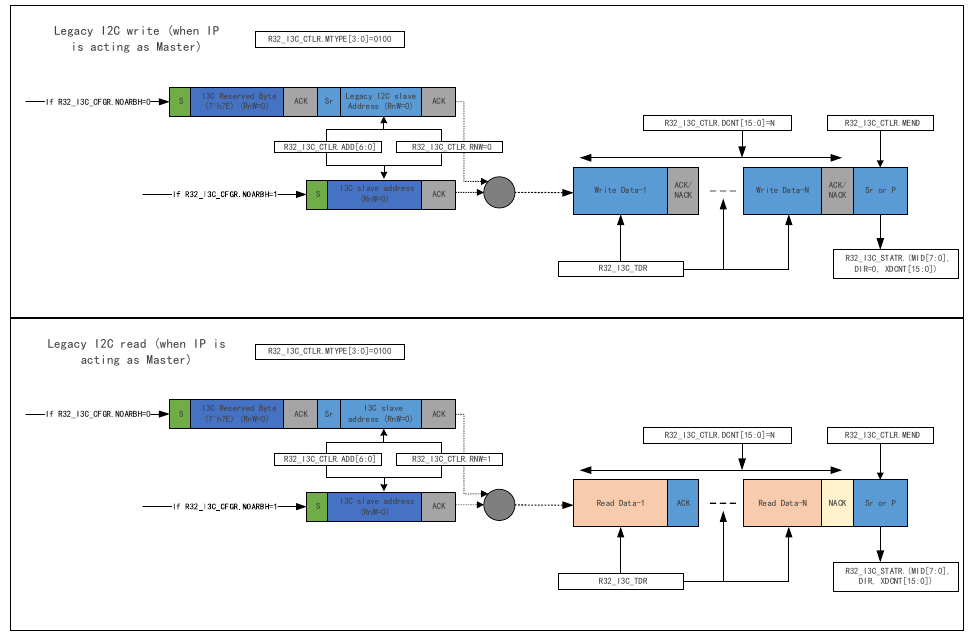
Legacy I2C write and read transfers use MTYPE[3:0]=0100. Similar to I3C private transfers, if R32_I3C_CFGR.NOARBH=0, an arbitrable header is inserted after the start condition. The legacy I2C transfer uses standard ACK/NACK handshake on the open-drain bus, without transition bits (T). Write data uses ACK/NACK from the slave, and read data uses ACK/NACK from the master (ACK to continue, NACK to end).
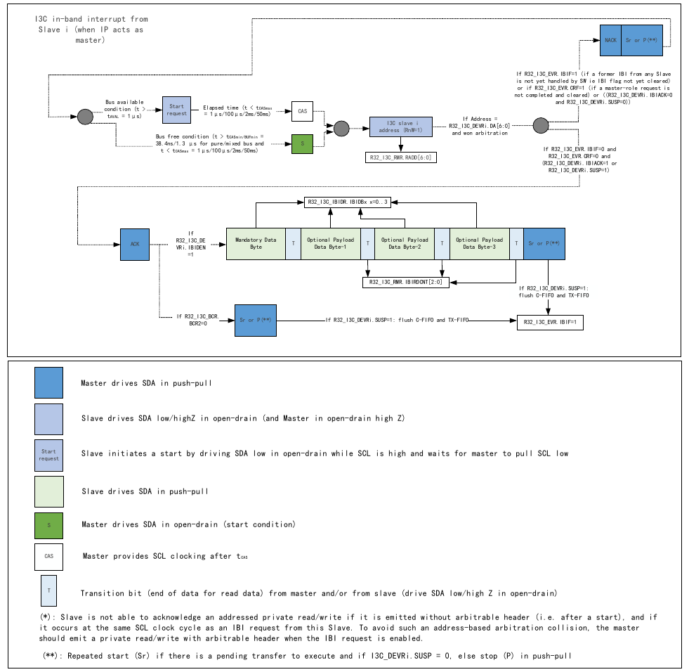
When the peripheral acts as a master, slaves can initiate in-band interrupt (IBI) requests by driving SDA low in open-drain while SCL is high. The master provides SCL clocking after tCAS. The IBI request is acknowledged or not acknowledged based on the R32_I3C_DEVRi.IBIACK and R32_I3C_DEVRi.SUSP configuration. If acknowledged, the slave address is read, and if IBIDEN=1, a mandatory data byte (MDB) follows, along with optional payload data bytes. The IBI payload data is received in the R32_I3C_IBIDR register.
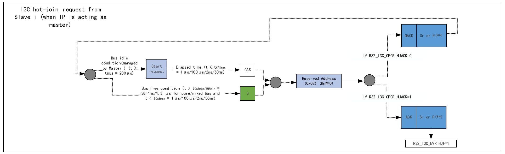
When the peripheral acts as a master, slaves can initiate hot-join requests by driving SDA low in open-drain while SCL is high when the bus is idle (t > tIDLE = 200μs). The master provides SCL clocking after tCAS. If R32_I3C_CFGR.HJACK=0, the hot-join request is NACKed. If HJACK=1, the reserved address (0x02, RnW=0) is acknowledged, and the HJF flag in R32_I3C_EVR is set to 1. A repeated start (Sr) is issued if there is a pending transfer to execute, otherwise a stop (P) is issued.
| FIFO | Content | Unit | Size | Used as master (basic principle) |
|---|---|---|---|---|
| C-FIFO | 32-bit control word | Word | 2 | Master (a frame can be based on multiple control words; this is not the case when used as a slave) |
| TX-FIFO | Data to be transmitted | Byte | 8 | Master |
| RX-FIFO | Data to be received | Byte | 8 | Master |
When used as a master, the C-FIFO can be used during broadcast CCC, direct read/write CCC, private read/write, legacy I2C read/write, and software-initiated error recovery.
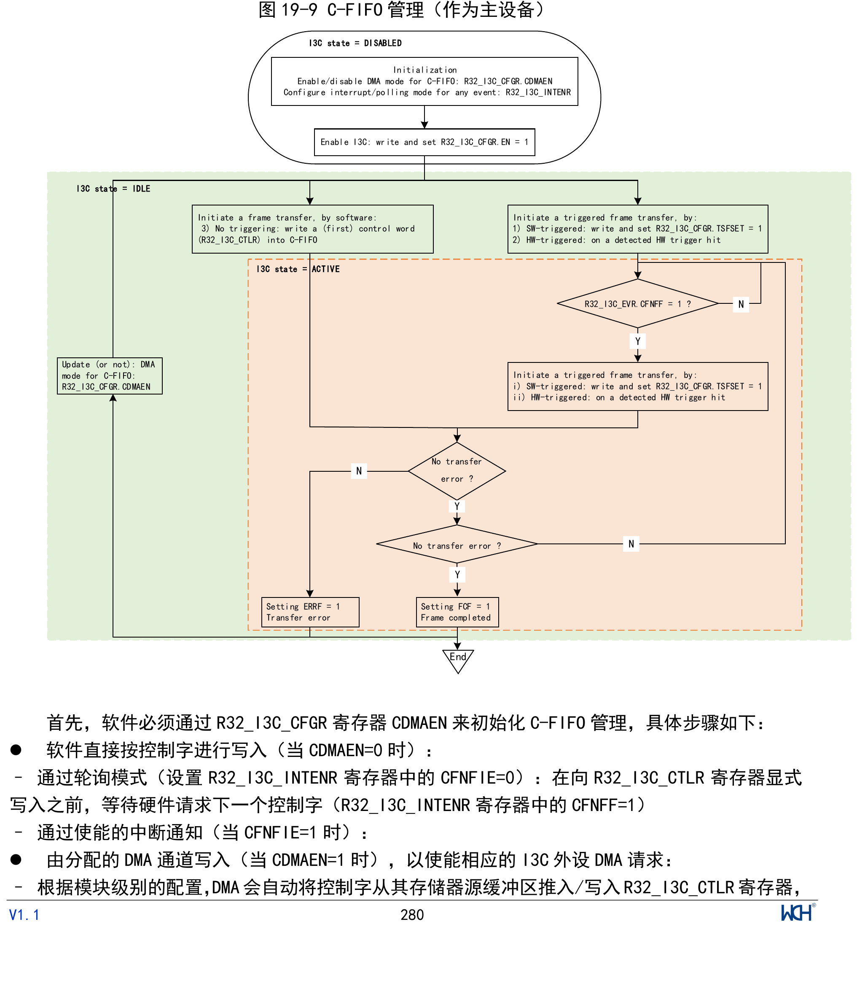
Figure 19-9 illustrates how the C-FIFO is managed to queue control words on the I3C bus when the I3C peripheral is used as a master.
First, software must initialize C-FIFO management through the CDMAEN bit in the R32_I3C_CFGR register, with the following steps:
When used as a master, the TX-FIFO can be used during broadcast or direct CCC (including ENTDAA and RSTACT), if there are defining bytes/sub-command bytes or data bytes, private write, and legacy I2C write.
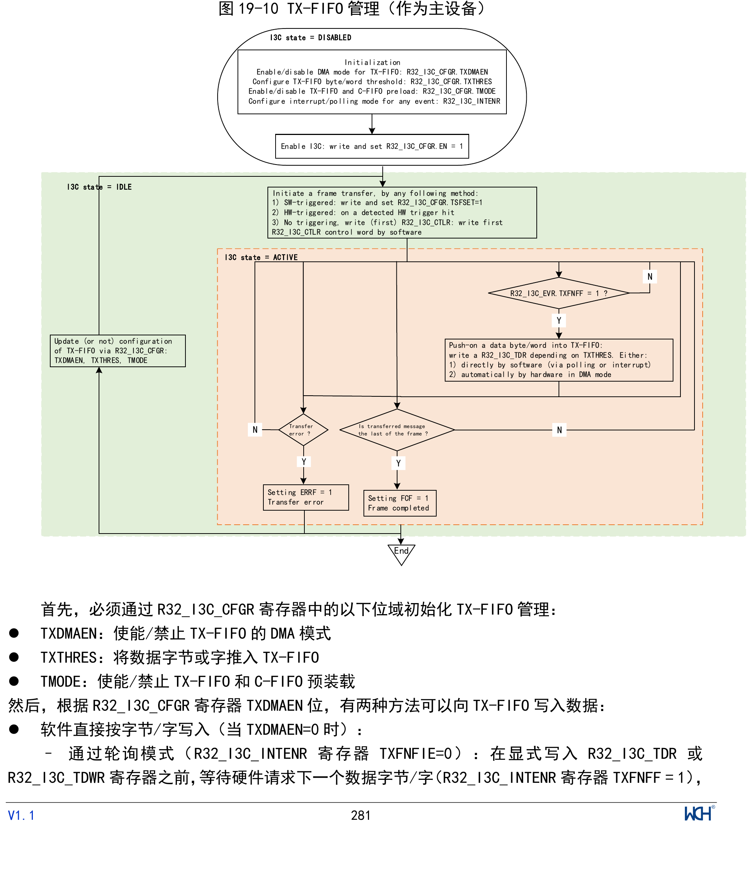
Figure 19-10 illustrates how the TX-FIFO is managed to queue data bytes or words to be transmitted on the I3C bus when the I3C peripheral is used as a master.
First, TX-FIFO management must be initialized through the following bit fields in the R32_I3C_CFGR register:
Then, depending on the TXDMAEN bit in the R32_I3C_CFGR register, there are two methods to write data to the TX-FIFO:
An I3C message begins with a start bit or repeated start bit, and ends with a stop bit or repeated start bit. At the message level, the last data byte/word to be transmitted is indicated by TXLASTF=1 in the R32_I3C_EVR register. When an I3C frame contains multiple messages (separated by repeated start bits), software can use this event to update the corresponding pointer to the buffer used to store the bytes/words of the next message.
When frame completion is reported (FCF=1 in R32_I3C_EVR register, and the corresponding interrupt is enabled), the TX-FIFO is empty. If the TX-FIFO is empty and a data byte must be transmitted on the I3C bus, a TX-FIFO underflow is reported (ERRF=1 in R32_I3C_EVR register and DOVR=1 in R32_I3C_STATER register). If the corresponding interrupt is enabled (ERRIE=1 in R32_I3C_INTENR register), an interrupt is generated. The TX-FIFO management configuration can be modified when the I3C peripheral is not in the active state.
When used as a master, if a transfer error occurs (ERRF=1), the hardware will automatically flush the TX-FIFO.
Without C-FIFO/TX-FIFO preload
The C-FIFO size is 2 words, and the TX-FIFO size is 8 bytes. Without C-FIFO/TX-FIFO preload enabled (TMODE=0 in R32_I3C_CFGR register), once the C-FIFO receives the first control word, the I3C peripheral will immediately issue a start bit on the I3C bus. The peripheral then decodes the R32_I3C_CTLR register and writes the next data byte or word as needed. Once the hardware requires the next control word to be sent on the I3C bus (e.g., a repeated start bit needs to be issued on the I3C bus or the C-FIFO needs available space), the peripheral immediately requests the control word to be written to the C-FIFO, until the last message (i.e., MEND=1 in R32_I3C_CTLR register). Similarly, once the hardware requires another data byte or word to be sent on the I3C bus (e.g., a repeated start bit needs to be issued on the I3C bus, the TX-FIFO is not full, or a data byte or word must be sent during this I3C message), the data byte/word must be immediately written to the TX-FIFO.
C-FIFO and TX-FIFO preload
When C-FIFO/TX-FIFO preload is configured (TMODE=1 in R32_I3C_CFGR register), before issuing the start bit on the bus, the I3C peripheral waits as much as possible for the C-FIFO and TX-FIFO to be loaded, as follows:
When used as a master, the RX-FIFO can be used during broadcast ENTDAA CCC, direct CCC read (including direct RSTACT CCC read), private read, and legacy I2C read.
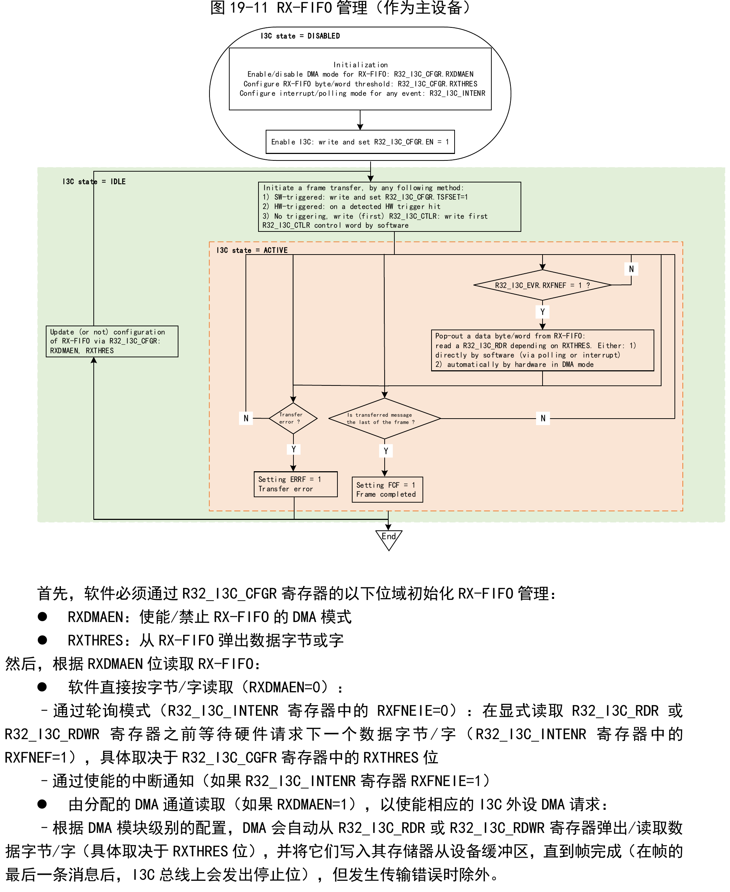
Figure 19-11 illustrates how the RX-FIFO is managed to queue and pop data bytes or words received on the I3C bus when the I3C peripheral is used as a master.
First, software must initialize RX-FIFO management through the following bit fields in the R32_I3C_CFGR register:
Then, the RX-FIFO is read depending on the RXDMAEN bit:
An I3C message begins with a start bit or repeated start bit, and ends with a stop bit or repeated start bit. At the message level, the last data byte/word received from the I3C bus is indicated by IRXLASTF=1 in the I3C_EVR register. When an I3C frame contains multiple messages (separated by repeated start bits), software can use this event to update the corresponding pointer to the buffer used to store the data bytes/words of the next message.
If the RX-FIFO is full and a data byte is received on the I3C bus, an RX-FIFO overflow is reported (ERRF=1 in R32_I3C_EVR register and DOVR=1 in R32_I3C_STATER register). If the corresponding interrupt is enabled (ERRIE=1 in R32_I3C_INTENR register), an interrupt is generated. The RX-FIFO management configuration can be modified when the I3C peripheral is not in the active state.
Slave early termination of read transfer
With the S-FIFO disabled (SMODE=0 in R32_I3C_CFGR register), software is notified of early termination of a read transfer through RXTGTENDF=1 in the R32_I3C_EVR register and the corresponding interrupt (if enabled). Software can then read the status register R32_I3C_STATR to check information related to the last message and obtain the number of data bytes received in the prematurely terminated read transfer (XDCNT[15:0] in R32_I3C_STATR register).
In any case, if the S-FIFO is enabled (SMODE=1 in R32_I3C_CFGR register), software or DMA (depending on SDMAEN in R32_I3C_CFGR register) must read the status register R32_I3C_STATR once for each message. The number of valid data bytes received in the prematurely terminated read message is reported by XDCNT[15:0] in R32_I3C_STATR register (followed by ABT=1).
| Error type | Description | Error detection | Master operation | Error reporting |
|---|---|---|---|---|
| CE0 | Illegal formatted CCC (e.g., slave returns fewer data bytes during direct CCC read transfer) | Detected at the end of legacy I2C read transfer when incorrect ACK is detected | Hardware holds SCL running for nine clock cycles, can exchange another byte, then issues NACK again followed by a stop bit | ERRF=1, PERR=1 and CODERR[3:0]=0000b |
| CE1 | Watchdog error | Unable to generate repeated start bit or stop bit at the end of I3C SDR read transfer | SCL is held running. Software can stop SCL by writing a control word with MTYPE[3:0]=0000 (header message) to the R32_I3C_CTLR register, then must usually wait at least 150µs before issuing another message. After CE1 error is detected, unable to generate start bit | ERRF=1, PERR=1 and CODERR[3:0]=0001b |
| CE2 | No response to broadcast address (1111110b) | During message transmission (except upgrade fault or reset timing message), header (1111110b+RnW=0) is detected as NACK | Hardware issues HDR exit timing followed by a stop bit | ERRF=1, PERR=1 and CODERR[3:0]=0010b |
| CE3 | Master role switch failure | After the new master drives SDA low (initiated by test header or start request from slave) and after the delay time defined in its active state has ended, SCL has not been driven low | Hardware issues start bit + 1111110b+RnW=0, followed by ACK/NACK from slave, and finally a stop bit | ERRF=1, PERR=1 and CODERR[3:0]=0011b |
| - | Incorrect 7-bit slave address with parity bit returned in GETACCCR CCC | Detected incorrect dynamic address and/or parity bit | Hardware cancels GETACCCR CCC by issuing repeated start bit + 1111110b+RnW=0, followed by ACK/NACK from slave, and finally a stop bit | ERRF=1 and DERR=1 |
| - | Addressed slave is NACKed for the first time in direct CCC read transfer | NACK detected | Hardware performs a single retry by issuing repeated start bit + 7-bit same slave address + RnW=1 | - |
| - | Addressed slave is NACKed for the second time in direct CCC write transfer, I3C private read/write transfer, legacy I2C transfer, or direct CCC read transfer | NACK detected | Hardware issues a stop bit | ERRF=1 and ANACK=1 |
| - | Assigned/sent dynamic address with parity bit is NACKed for the first time in ENTDAA CCC | NACK detected | Hardware performs a single retry assignment loop by issuing repeated start bit + 1111110b+RnW=1, followed by ACK from the (highest priority) slave and 8-byte read data, then the assigned address + parity bit | - |
| - | Assigned/sent dynamic address with parity bit is NACKed for the second time in ENTDAA CCC | NACK detected | Hardware issues a stop bit | ERRF=1 and DNACK=1 |
| - | Write data is NACKed in legacy I2C write transfer | NACK detected | Hardware issues a stop bit | ERRF=1 and DNACK=1 |
| - | Relative to I3C bus timing, control words, status words, transmit data, or read data are not written/read in time | SCL stall timeout | Hardware issues a stop bit | ERRF=1 and (COVR=1 or DOVR=1) |
When the I3C is in sleep mode under low-power mode, it is not affected. I3C interrupts can wake the device from sleep mode. When in low-power mode, changes on the SCL and SDA buses will wake the system, exiting low-power mode.
| Interrupt event | Interrupt partition | Interrupt enable control | Event flag | Event clear control |
|---|---|---|---|---|
| Request control word | Request | CFNFIE | CFNFF | - |
| Request data to be transmitted | TXFNFIE | TXFNFF | - | |
| Request data to be received | RXFNEIE | RXFNEF | - | |
| Master: frame transfer complete | FCIE | FCF | CFCF | |
| IBI request received | IBIIE | IBIF | CIBIF | |
| Hot-join request received | HJIE | HJF | CHJF | |
| Error occurred | Error | ERRIE | ERRF | CERRF |
| Name | Address | Description | Reset Value |
|---|---|---|---|
| R32_I3C_CTLR | 0x40024C00 | I3C control register | 0x00000000 |
| R32_I3C_CFGR | 0x40024C04 | I3C configuration register | 0x00000040 |
| R32_I3C_RDR | 0x40024C10 | I3C receive data byte register | 0x00000000 |
| R32_I3C_TDR | 0x40024C18 | I3C transmit data byte register | 0x00000000 |
| R32_I3C_IBIDR | 0x40024C20 | I3C IBI payload data register | 0x00000000 |
| R32_I3C_RESET | 0x40024C2C | I3C reset register | 0x03000000 |
| R32_I3C_STATR | 0x40024C30 | I3C status register | 0x00000000 |
| R32_I3C_STATER | 0x40024C34 | I3C status error register | 0x00000000 |
| R32_I3C_RMR | 0x40024C40 | I3C receive message register | 0x00000000 |
| R32_I3C_EVR | 0x40024C50 | I3C event register | 0x00000003 |
| R32_I3C_INTENR | 0x40024C54 | I3C interrupt enable register | 0x00000000 |
| R32_I3C_CEVR | 0x40024C58 | I3C clear event register | 0x00000000 |
| R32_I3C_DEVR0 | 0x40024C60 | I3C device register 0 | 0x00000000 |
| R32_I3C_DEVR1 | 0x40024C64 | I3C device register 1 | 0x00000000 |
| R32_I3C_DEVR2 | 0x40024C68 | I3C device register 2 | 0x00000000 |
| R32_I3C_DEVR3 | 0x40024C6C | I3C device register 3 | 0x00000000 |
| R32_I3C_DEVR4 | 0x40024C70 | I3C device register 4 | 0x00000000 |
| R32_I3C_TIMINGR0 | 0x40024CA0 | I3C timing register 0 | 0x00000000 |
| R32_I3C_TIMINGR1 | 0x40024CA4 | I3C timing register 1 | 0x00000000 |
| R32_I3C_TIMINGR2 | 0x40024CA8 | I3C timing register 2 | 0x00000000 |
| R32_I3C_GETMDSR | 0x40024CD0 | I3C get maximum data speed register | 0x00000000 |
Offset address: 0x00
| 31 | 30 | 29 | 28 | 27 | 26 | 25 | 24 | 23 | 22 | 21 | 20 | 19 | 18 | 17 | 16 |
|---|---|---|---|---|---|---|---|---|---|---|---|---|---|---|---|
| MEND | MTYPE[3:0] | Reserved | ADD[6:0] | RNW | |||||||||||
| 15 | 14 | 13 | 12 | 11 | 10 | 9 | 8 | 7 | 6 | 5 | 4 | 3 | 2 | 1 | 0 |
|---|---|---|---|---|---|---|---|---|---|---|---|---|---|---|---|
| DCNT[15:0] | |||||||||||||||
| Bits | Name | Access | Description | Reset |
|---|---|---|---|---|
| 31 | MEND | WO | End of message type/last message of frame: 1: This message from the master ends with a stop bit and is the last message of the frame; 0: This message from the master is followed by a repeated start bit before another message can be issued. Note: This bit cannot be 0 when MTYPE[3:0]=0100b. |
0 |
| [30:27] | MTYPE[3:0] | WO | Message type. When I3C is used as master: 0000: SCL clock forced stop until the next control word is executed; 0001: Header message; 0010: Private message; 0011: Direct message (second part of I3C SDR direct CCC command); 0100: Legacy I2C message; Others: Reserved. |
0 |
| [26:24] | Reserved | RO | Reserved. | 0 |
| [23:17] | ADD[6:0] | WO | 7-bit I3C dynamic/I2C static slave address. Note: When I3C is used as master, this bit field is used if MTYPE[3:0] is 0010b, 0011b, or 0100b. |
0 |
| 16 | RNW | WO | Read/not-write message. 1: Read message; 0: Write message. Note: When I3C is used as master, this bit field is used if MTYPE[3:0] is 0010b, 0011b, or 0100b. |
0 |
| [15:0] | DCNT[15:0] | WO | Data count to be transferred during read/write messages, in bytes: 0x0000: No data to transfer; 0x0001: 1 byte; 0x0002: 2 bytes; ... 0xFFFF: 64KB - 1 byte. When I3C is used as master, this bit field is used to set the number of data bytes exchanged on the bus if MTYPE[3:0] is 0010b, 0011b, or 0100b. For private or legacy I2C read/write messages, this bit field must be non-empty. |
0 |
Offset address: 0x00
| 31 | 30 | 29 | 28 | 27 | 26 | 25 | 24 | 23 | 22 | 21 | 20 | 19 | 18 | 17 | 16 |
|---|---|---|---|---|---|---|---|---|---|---|---|---|---|---|---|
| MEND | MTYPE[3:0] | Reserved | CCC[7:0] | ||||||||||||
| 15 | 14 | 13 | 12 | 11 | 10 | 9 | 8 | 7 | 6 | 5 | 4 | 3 | 2 | 1 | 0 |
|---|---|---|---|---|---|---|---|---|---|---|---|---|---|---|---|
| DCNT[15:0] | |||||||||||||||
| Bits | Name | Access | Description | Reset |
|---|---|---|---|---|
| 31 | MEND | WO | End of message type/last message of frame: 1: This message from the master ends with a stop bit and is the last message of the frame; 0: This message from the master is followed by a repeated start bit before another message can be issued. Note: This bit cannot be 0 when MTYPE[3:0]=0100b. |
0 |
| [30:27] | MTYPE[3:0] | WO | Message type. When I3C is used as master: 0110: Broadcast/direct CCC command; Bits [23:16] (CCC[7:0]) are the 8-bit CCC code issued; Bits [15:0] (DCNT[15:0]) are the number of CCC defining bytes, CCC sub-command bytes, or CCC data bytes. If bit[23] = CCC[7] = 1: The message is the first part of a direct CCC command for I3C SDR direct CCC command; the direct CCC command (first part) message is: – {S/S + 0b111_1110 +RnW = 0/Sr+*} + (direct CCC + T) + (8-bit data + T)* + Sr; – After S (start bit), the arbitrable header (0b111_1110 + RnW = 0) is inserted or not depending on the NOARBH bit in the R32_I3C_CFGR register. – Sr+*: After Sr (repeated start bit), the hardware automatically inserts (0b111_1110 + R/W). If bit[23] = CCC[7] = 0: The message is an I3C SDR broadcast CCC command; the broadcast CCC command message transmitted is: – {S/S + 0b111_1110 + RnW = 0/Sr + *} + (broadcast CCC + T) + (8-bit data + T)* + Sr/P – After S (start bit), the arbitrable header (0b111_1110 + RnW = 0) is inserted or not depending on the NOARBH bit. – Sr+*: After Sr (repeated start bit), the hardware automatically inserts (0b111_1110 + R/W). Other values: Reserved. |
0 |
| [26:24] | Reserved | RO | Reserved. | 0 |
| [23:16] | CCC[7:0] | WO | 8-bit CCC code: If bit[23] = CCC[7] = 1, the message is the first part of an I3C SDR direct CCC command. If bit[23] = CCC[7] = 0, the message is an I3C SDR broadcast CCC command (including ENTDAA). |
0 |
| [15:0] | DCNT[15:0] | WO | Count of CCC command-related data to be transmitted as CCC defining bytes, CCC sub-command bytes, or CCC data bytes (in bytes): Linear encoding up to 64KB - 1. 0x0000: No data to transfer; Note: Value forced when issuing ENTDAA broadcast CCC. 0x0001: 1 byte; Note: Value forced when issuing RSTACT direct/broadcast CCC. 0x0002: 2 bytes; ... 0xFFFF: 64KB - 1 byte. |
0 |
Offset address: 0x04
| 31 | 30 | 29 | 28 | 27 | 26 | 25 | 24 | 23 | 22 | 21 | 20 | 19 | 18 | 17 | 16 | |
|---|---|---|---|---|---|---|---|---|---|---|---|---|---|---|---|---|
| Reserved | TSFSET | Reserved | CFLUSH | CDMAEN | TMODE | Reserved | ||||||||||
| 15 | 14 | 13 | 12 | 11 | 10 | 9 | 8 | 7 | 6 | 5 | 4 | 3 | 2 | 1 | 0 |
|---|---|---|---|---|---|---|---|---|---|---|---|---|---|---|---|
| Reserved | TXTHRES | TXFLUSH | TXDMAEN | Reserved | RXTHRES | RXFLUSH | RXDMAEN | HJACK | PULLUP_EN | Reserved | EXITPTRN | RSTPTRN | NOARBH | CRINIT | EN |
| Bits | Name | Access | Description | Reset |
|---|---|---|---|---|
| 31 | Reserved | RO | Reserved. | 0 |
| 30 | TSFSET | W0 | Frame transfer setting: 1: Hardware sets the CFNFF bit to initiate frame transfer; 0: No operation. If this bit is not set to 1, frame transfer can be initiated by software by directly writing the first control word register (R32_I3C_CTLR) when the C-FIFO is empty (CFEF bit in R32_I3C_EVR register is 1). Then, if the first written control word is not marked as end of message (MEND bit in R32_I3C_CTLR register is 0), the hardware will set CFNFF to 1. |
0 |
| [29:22] | Reserved | RO | Reserved. | 0 |
| 21 | CFLUSH | W0 | C-FIFO flush: 1: Flush the C-FIFO; 0: No operation. |
0 |
| 20 | CDMAEN | RW | C-FIFO DMA request enable: 1: Enable DMA mode for C-FIFO; 0: Disable DMA mode for C-FIFO. |
0 |
| 19 | TMODE | RW | Frame issued on the I3C bus to manage C-FIFO and TX-FIFO: 1: Preload C-FIFO and TX-FIFO before initiating frame transfer. 0: Do not preload C-FIFO and TX-FIFO before initiating frame transfer. Frame transfer starts immediately when the first control word appears in the C-FIFO. |
0 |
| [18:15] | Reserved | RO | Reserved. | 0 |
| 14 | TXTHRES | RW | TX-FIFO threshold: 1: 1 word/4-byte threshold; 0: 1-byte threshold. |
0 |
| 13 | TXFLUSH | WO | TX-FIFO flush: 1: Flush the TX-FIFO; 0: No operation. |
0 |
| 12 | TXDMAEN | RW | TX-FIFO DMA request enable: 1: Enable DMA mode for TX-FIFO; 0: Disable DMA mode for TX-FIFO. |
0 |
| 11 | Reserved | RO | Reserved. | 0 |
| 10 | RXTHRES | RW | RX-FIFO threshold: 1: 1 word/4-byte threshold; 0: 1-byte threshold. |
0 |
| 9 | RXFLUSH | WO | RX-FIFO flush: 1: Flush the RX-FIFO; 0: No operation. |
0 |
| 8 | RXDMAEN | RW | RX-FIFO DMA request enable: 1: Enable DMA mode for RX-FIFO; 0: Disable DMA mode for RX-FIFO. |
0 |
| 7 | HJACK | RW | Hot-join request acknowledge: 1: Hot-join request is acknowledged; 0: Hot-join request is not acknowledged. |
0 |
| 6 | PULLUP_EN | RW | SDA pull-up enable: 1: Enable SDA pull-up; 0: In low-power mode, the pull-up can be turned off to reduce power consumption. |
1 |
| 5 | Reserved | RO | Reserved. | 0 |
| 4 | EXITPTRN | RW | HDR exit timing enable: 1: Send HDR exit timing after issuing the message header (MTYPE[3:0] bit in R32_I3C_CTLR register is 0001b). This is used for master error detection and escalation handling when the slave does not respond to a private message or direct read CCC. 0: Do not send HDR exit timing after issuing the message header (MTYPE[3:0] bit in R32_I3C_CTLR register is 0001b). This is used to send a header to test bus ownership after a master role switch if there are concerns (the new master has not enabled its master role by accessing the previous master within the delay time defined in the active state). |
0 |
| 3 | RSTPTRN | RW | HDR reset timing enable: 1: Insert HDR reset timing before the stop bit of any issued frame (including RSTACT CCC command); 0: Issue a standard stop bit at the end of the frame. |
0 |
| 2 | NOARBH | RW | No arbitrable header after start bit: 1: No arbitrable header - For legacy I2C messages or I3C SDR private read/write messages, the slave address is issued directly after the start bit. - This is a more efficient option (when issuing 0x7E arbitrable header is useless), but can only be used when the master is certain that the addressed slave device cannot simultaneously issue an IBI or master-role request (to ensure that there is no erroneous parsing and potential conflict between the address issued by the master in open-drain mode and the same address that the slave device could issue after the start bit for IBI or MR). 0: Issue an arbitrable header (0b111_1110 + RnW = 0) after the start bit, before the legacy I2C message or I3C SDR private read/write message (default). |
0 |
| 1 | CRINIT | RW | Mark master/slave role: 1: Master role; 0: Slave role. |
0 |
| 0 | EN | RW | I3C enable: 1: Enable I3C; 0: Disable I3C. |
0 |
Offset address: 0x10
| 31 | 30 | 29 | 28 | 27 | 26 | 25 | 24 | 23 | 22 | 21 | 20 | 19 | 18 | 17 | 16 |
|---|---|---|---|---|---|---|---|---|---|---|---|---|---|---|---|
| Reserved | |||||||||||||||
| 15 | 14 | 13 | 12 | 11 | 10 | 9 | 8 | 7 | 6 | 5 | 4 | 3 | 2 | 1 | 0 |
|---|---|---|---|---|---|---|---|---|---|---|---|---|---|---|---|
| Reserved | RDB0[7:0] | ||||||||||||||
| Bits | Name | Access | Description | Reset |
|---|---|---|---|---|
| [31:8] | Reserved | RO | Reserved. | 0 |
| [7:0] | RDB0[7:0] | RO | 8-bit received data on the I3C bus. | 0 |
Offset address: 0x18
| 31 | 30 | 29 | 28 | 27 | 26 | 25 | 24 | 23 | 22 | 21 | 20 | 19 | 18 | 17 | 16 |
|---|---|---|---|---|---|---|---|---|---|---|---|---|---|---|---|
| Reserved | |||||||||||||||
| 15 | 14 | 13 | 12 | 11 | 10 | 9 | 8 | 7 | 6 | 5 | 4 | 3 | 2 | 1 | 0 |
|---|---|---|---|---|---|---|---|---|---|---|---|---|---|---|---|
| Reserved | TDB0[7:0] | ||||||||||||||
| Bits | Name | Access | Description | Reset |
|---|---|---|---|---|
| [31:8] | Reserved | RO | Reserved. | 0 |
| [7:0] | TDB0[7:0] | RO | 8-bit transmitted data on the I3C bus. | 0 |
Offset address: 0x20
| 31 | 30 | 29 | 28 | 27 | 26 | 25 | 24 | 23 | 22 | 21 | 20 | 19 | 18 | 17 | 16 |
|---|---|---|---|---|---|---|---|---|---|---|---|---|---|---|---|
| IBIDB3[7:0] | IBIDB2[7:0] | ||||||||||||||
| 15 | 14 | 13 | 12 | 11 | 10 | 9 | 8 | 7 | 6 | 5 | 4 | 3 | 2 | 1 | 0 |
|---|---|---|---|---|---|---|---|---|---|---|---|---|---|---|---|
| IBIDB1[7:0] | IBIDB0[7:0] | ||||||||||||||
| Bits | Name | Access | Description | Reset |
|---|---|---|---|---|
| [31:24] | IBIDB3[7:0] | RW | 8-bit IBI payload data (latest byte on the I3C bus). | 0 |
| [23:16] | IBIDB2[7:0] | RW | 8-bit IBI payload data (byte following IBIDB1[7:0] on the I3C bus). | 0 |
| [15:8] | IBIDB1[7:0] | RW | 8-bit IBI payload data (byte following IBIDB0[7:0] on the I3C bus). | 0 |
| [7:0] | IBIDB0[7:0] | RW | 8-bit IBI payload data (earliest byte on the I3C bus, MDB[7:0] mandatory data byte). | 0 |
Offset address: 0x2C
| 31 | 30 | 29 | 28 | 27 | 26 | 25 | 24 | 23 | 22 | 21 | 20 | 19 | 18 | 17 | 16 |
|---|---|---|---|---|---|---|---|---|---|---|---|---|---|---|---|
| Reserved | HST_SIE_RST | Reserved | |||||||||||||
| 15 | 14 | 13 | 12 | 11 | 10 | 9 | 8 | 7 | 6 | 5 | 4 | 3 | 2 | 1 | 0 |
|---|---|---|---|---|---|---|---|---|---|---|---|---|---|---|---|
| Reserved | |||||||||||||||
| Bits | Name | Access | Description | Reset |
|---|---|---|---|---|
| [31:25] | Reserved | RO | Reserved. | 0x1 |
| 24 | HST_SIE_RST | RW | Master reset register: 1: The master protocol layer is in reset state; 0: The master protocol layer is in operating state. | 1 |
| [23:0] | Reserved | RO | Reserved. | 0 |
Offset address: 0x30
| 31 | 30 | 29 | 28 | 27 | 26 | 25 | 24 | 23 | 22 | 21 | 20 | 19 | 18 | 17 | 16 |
|---|---|---|---|---|---|---|---|---|---|---|---|---|---|---|---|
| MID[7:0] | Reserved | DIR | ABT | Reserved | |||||||||||
| 15 | 14 | 13 | 12 | 11 | 10 | 9 | 8 | 7 | 6 | 5 | 4 | 3 | 2 | 1 | 0 |
|---|---|---|---|---|---|---|---|---|---|---|---|---|---|---|---|
| XDCNT[15:0] | |||||||||||||||
| Bits | Name | Access | Description | Reset |
|---|---|---|---|---|
| [31:24] | MID[7:0] | RO | Message identifier/counter for a given frame: When I3C is used as master, this bit field identifies the control word message (R32_I3C_CTLR) referenced by the R32_I3C_STATR status register. The first message of a frame is identified with MID[7:0] = 0. When a new message control word (R32_I3C_CTLR) on the I3C bus is completed, this bit field is incremented (by hardware). This bit field is reset each time a new frame starts. |
0 |
| [23:19] | Reserved | RO | Reserved. | 0 |
| 18 | DIR | RO | Message direction: 1: Read; 0: Write. Note: ENTDAA CCC is considered a write command. |
0 |
| 17 | ABT | RO | Slave early termination of private read message: 1: Slave completed early; 0: Slave did not complete early. |
0 |
| 16 | Reserved | RO | Reserved. | 0 |
| [15:0] | XDCNT[15:0] | RO | Data counter: Condition: During dynamic address assignment process (ENTDAA CCC) - When I3C is used as master: Number of slaves detected on the bus; Condition: For other transfers during a message - Regardless of whether I3C is used as master: Number of data bytes read from the I3C bus or sent on the I3C bus during the message. |
0 |
Offset address: 0x34
| 31 | 30 | 29 | 28 | 27 | 26 | 25 | 24 | 23 | 22 | 21 | 20 | 19 | 18 | 17 | 16 |
|---|---|---|---|---|---|---|---|---|---|---|---|---|---|---|---|
| Reserved | |||||||||||||||
| 15 | 14 | 13 | 12 | 11 | 10 | 9 | 8 | 7 | 6 | 5 | 4 | 3 | 2 | 1 | 0 |
|---|---|---|---|---|---|---|---|---|---|---|---|---|---|---|---|
| Reserved | DERR | DNACK | ANACK | COVR | DOVR | Reserved | PERR | CODERR[3:0] | |||||||
| Bits | Name | Access | Description | Reset |
|---|---|---|---|---|
| [31:11] | Reserved | RO | Reserved. | 0 |
| 10 | DERR | RO | Data error: 1: When the received slave address and/or parity bit does not match, the master detects a data error during the master role switching process (GETACCCR CCC, formerly known as GETACCMST). The active master retains the master role. 0: No error detected. |
0 |
| 9 | DNACK | RO | Data not acknowledged: 1: The master detects that the slave did not acknowledge a data byte during: i) Legacy I2C write transfer; ii) Second attempt to send dynamic address during ENTDAA process. 0: No error detected. |
0 |
| 8 | ANACK | RO | Address not acknowledged: 1: The master detects that the slave did not acknowledge the static/dynamic address during: i) Legacy I2C read/write transfer; ii) Direct CCC write transfer; iii) Second attempt of direct CCC read transfer; iv) Private read/write transfer; 0: No error detected. |
0 |
| 7 | COVR | RO | C-FIFO underflow: 1: The master detects: i) C-FIFO underflow: The control FIFO is empty and a repeated start bit must be issued; 0: No error detected. |
0 |
| 6 | DOVR | RO | RX-FIFO overflow or TX-FIFO underflow: i) TX-FIFO underflow: The TX-FIFO is empty and a write data byte must be sent; ii) RX-FIFO overflow: The RX-FIFO is full and a new data byte is received; 0: No error detected. |
0 |
| 5 | Reserved | RO | Reserved. | 0 |
| 4 | PERR | RO | Protocol error: 1: Protocol error detected; 0: No error detected. |
0 |
| [3:0] | CODERR[3:0] | RO | 0000: CE0 error (transaction after sending CCC): The master detects an illegally formatted CCC; 0001: CE1 error (watchdog error): The master detects that the data sent on the bus does not match expectations; 0010: CE2 error (no response to broadcast address): The master detects that the broadcast address (0b111_1110) is not acknowledged; 0011: CE3 error (master role switch failure): The master detects that the new master did not drive the bus after the master role switch; Other values: Reserved. |
0 |
Offset address: 0x40
| 31 | 30 | 29 | 28 | 27 | 26 | 25 | 24 | 23 | 22 | 21 | 20 | 19 | 18 | 17 | 16 |
|---|---|---|---|---|---|---|---|---|---|---|---|---|---|---|---|
| Reserved | RADD[6:0] | Reserved | |||||||||||||
| 15 | 14 | 13 | 12 | 11 | 10 | 9 | 8 | 7 | 6 | 5 | 4 | 3 | 2 | 1 | 0 |
|---|---|---|---|---|---|---|---|---|---|---|---|---|---|---|---|
| RCODE[7:0] | Reserved | IBIRDCNT[2:0] | |||||||||||||
| Bits | Name | Access | Description | Reset |
|---|---|---|---|---|
| [31:24] | Reserved | RO | Reserved. | 0 |
| [23:17] | RADD[6:0] | RO | Received slave address: When I3C is configured as master, this bit field records the dynamic address received from the slave during an acknowledged IBI or master-role request. |
0 |
| 16 | Reserved | RO | Reserved. | 0 |
| [15:8] | RCODE[7:0] | RO | Received CCC code. | 0 |
| [7:3] | Reserved | RO | Reserved. | 0 |
| [2:0] | IBIRDCNT[2:0] | RO | IBI received payload data count: When I3C is configured as master, this bit field records the number of valid data bytes received in the R32_I3C_IBIDR register. Note: For chips with a lot number second-to-last digit greater than 0, it becomes 0x7 after clearing the IBI request flag. |
0x7 |
Offset address: 0x50
| 31 | 30 | 29 | 28 | 27 | 26 | 25 | 24 | 23 | 22 | 21 | 20 | 19 | 18 | 17 | 16 |
|---|---|---|---|---|---|---|---|---|---|---|---|---|---|---|---|
| Reserved | HJF | Reserved | |||||||||||||
| 15 | 14 | 13 | 12 | 11 | 10 | 9 | 8 | 7 | 6 | 5 | 4 | 3 | 2 | 1 | 0 |
|---|---|---|---|---|---|---|---|---|---|---|---|---|---|---|---|
| IBIF | Reserved | ERRF | RXTGTENDF | FCF | Reserved | RXLASTF | TXLASTF | RXFNEF | TXFNFF | Reserved | CFNFF | TXFEF | CFEF | ||
| Bits | Name | Access | Description | Reset |
|---|---|---|---|---|
| [31:20] | Reserved | RO | Reserved. | 0 |
| 19 | HJF | RO | Hot-join flag: When I3C is used as master, this flag is set to 1 by hardware to indicate that a hot-join request has been received. This flag is cleared by software writing 1 to the CHJF bit in the R32_I3C_CEVR register. |
0 |
| [18:16] | Reserved | RO | Reserved. | 0 |
| 15 | IBIF | RO | IBI flag: When I3C is used as master, this flag is set to 1 by hardware to indicate that an IBI request has been received. This flag is cleared by software writing 1 to the CIBIF bit in the R32_I3C_CEVR register. |
0 |
| [14:12] | Reserved | RO | Reserved. | 0 |
| 11 | ERRF | RO | Error flag: This flag is set to 1 by hardware to indicate that an error has occurred. Software must then read R32_I3C_STATER to obtain the error type. This flag is cleared by software writing 1 to the CERRF bit in the R32_I3C_CEVR register. |
0 |
| 10 | RXTGTENDF | RO | Slave-initiated read end flag: When I3C is used as master, this flag indicates that the slave has terminated the read transfer early. Software must then read the status register R32_I3C_STATR to check information related to the last message and obtain the number of data bytes received in the prematurely terminated read transfer (XDCNT in R32_I3C_STATR register). This flag is cleared by software writing 1 to the CRXTGTENDF bit in the R32_I3C_CEVR register. |
0 |
| 9 | FCF | RO | Frame complete flag: When I3C is used as master, this flag is set to 1 by hardware to indicate that the frame on the I3C bus has completed (normally), e.g., when a stop bit is issued. This flag is cleared by software writing 1 to the CFCF bit in the R32_I3C_CEVR register. |
0 |
| 8 | Reserved | RO | Reserved. | 0 |
| 7 | RXLASTF | RO | Last read data byte/word flag: When I3C is used as master, this flag is set to 1 by hardware to indicate the last data byte/word of the message that must be read from the RX-FIFO (depending on the RXTHRES bit in the I3C_CFGR register). When the last data byte/word of the message is read, this flag is cleared by hardware. |
0 |
| 6 | TXLASTF | RO | Last written data byte/word flag: This flag is set to 1 by hardware to indicate the last data byte/word of the message that must be written to the TX-FIFO (depending on the TXTHRES bit in the R32_I3C_CFGR register). When the last data byte/word of the message is written, this flag is cleared by hardware. |
0 |
| 5 | RXFNEF | RO | RX-FIFO not empty flag: This flag is set/cleared by hardware to indicate that data bytes must/must not be read from the RX-FIFO. Note: Before reading a data byte from the RX-FIFO (reading R32_I3C_RDR, depending on RXTHRES), software must wait for RXFNEF = 1 (through polling or through an enabled interrupt). |
0 |
| 4 | TXFNFF | RO | TX-FIFO not full flag: This flag is set/cleared by hardware to indicate that data bytes must/must not be written to the TX-FIFO. Note: Before writing to the TX-FIFO (writing R32_I3C_TDR, depending on TXTHRES), software must wait for TXFNFF = 1 (through polling or through an enabled interrupt). |
0 |
| 3 | Reserved | RO | Reserved. | 0 |
| 2 | CFNFF | RO | C-FIFO not full flag: When I3C is used as master, this flag is set to 1 by hardware to indicate that a control word must be written to the C-FIFO. This flag is cleared by hardware to indicate that no control word should be written to the C-FIFO. Note: Before writing to the C-FIFO (writing R32_I3C_CTLR), software must wait for CFNFF = 1 (through polling or through an enabled interrupt). |
0 |
| 1 | TXFEF | RO | TX-FIFO empty flag: This flag is set to 1 by hardware to indicate that the TX-FIFO is empty; This flag is cleared by hardware to indicate that the TX-FIFO is not empty. |
1 |
| 0 | CFEF | RO | C-FIFO empty flag: When used as master: This flag is set to 1 by hardware to indicate that the C-FIFO is empty; This flag is cleared by hardware to indicate that the C-FIFO is not empty. When used as slave: This flag is set to 1 by hardware to indicate that the R32_I3C_CTLR register does not contain a control word (no IBI/CR/HJ request); This flag is cleared by hardware to indicate that the R32_I3C_CTLR register contains a control word (pending IBI/CR/HJ request). Note: If C-FIFO and TX-FIFO preload is configured (TMODE bit in R32_I3C_CFGR register is 1), software must wait for TXFEF = 1 and CFEF = 1 before starting a new frame transfer. |
1 |
Offset address: 0x54
| 31 | 30 | 29 | 28 | 27 | 26 | 25 | 24 | 23 | 22 | 21 | 20 | 19 | 18 | 17 | 16 |
|---|---|---|---|---|---|---|---|---|---|---|---|---|---|---|---|
| Reserved | HJIE | Reserved | |||||||||||||
| 15 | 14 | 13 | 12 | 11 | 10 | 9 | 8 | 7 | 6 | 5 | 4 | 3 | 2 | 1 | 0 |
|---|---|---|---|---|---|---|---|---|---|---|---|---|---|---|---|
| IBIIE | Reserved | ERRIE | RXTGTENDIE | FCIE | Reserved | RXFNEIE | TXFNEIE | Reserved | CFNFIE | Reserved | |||||
| Bits | Name | Access | Description | Reset |
|---|---|---|---|---|
| [31:20] | Reserved | RO | Reserved. | 0 |
| 19 | HJIE | RW | Hot-join interrupt enable: 1: Enable; 0: Disable. |
0 |
| [18:17] | Reserved | RO | Reserved. | 0 |
| 15 | IBIIE | RW | IBI request interrupt enable: 1: Enable; 0: Disable. |
0 |
| [14:12] | Reserved | RO | Reserved. | 0 |
| 11 | ERRIE | RW | Error interrupt enable: 1: Enable; 0: Disable. |
0 |
| 10 | RXTGTENDIE | RW | Slave-initiated read end interrupt enable: 1: Enable; 0: Disable. |
0 |
| 9 | FCIE | RW | Frame complete interrupt enable: 1: Enable; 0: Disable. |
0 |
| [8:6] | Reserved | RO | Reserved. | 0 |
| 5 | RXFNEIE | RW | RX-FIFO not empty interrupt enable: 1: Enable; 0: Disable. |
0 |
| 4 | TXFNEIE | RW | TX-FIFO not full interrupt enable: 1: Enable; 0: Disable. |
0 |
| 3 | Reserved | RO | Reserved. | 0 |
| 2 | CFNFIE | RW | C-FIFO not full interrupt enable: 1: Enable; 0: Disable. |
0 |
| [1:0] | Reserved | RO | Reserved. | 0 |
Offset address: 0x58
| 31 | 30 | 29 | 28 | 27 | 26 | 25 | 24 | 23 | 22 | 21 | 20 | 19 | 18 | 17 | 16 |
|---|---|---|---|---|---|---|---|---|---|---|---|---|---|---|---|
| Reserved | CHJF | Reserved | |||||||||||||
| 15 | 14 | 13 | 12 | 11 | 10 | 9 | 8 | 7 | 6 | 5 | 4 | 3 | 2 | 1 | 0 |
|---|---|---|---|---|---|---|---|---|---|---|---|---|---|---|---|
| CIBIF | Reserved | CERRF | CRXTGTENDF | CFCF | Reserved | ||||||||||
| Bits | Name | Access | Description | Reset |
|---|---|---|---|---|
| [31:20] | Reserved | RO | Reserved. | 0 |
| 19 | CHJF | WO | Clear hot-join flag: 1: Clear HJF; 0: No effect. |
0 |
| [18:16] | Reserved | RO | Reserved. | 0 |
| 15 | CIBIF | WO | Clear IBI request flag: 1: Clear IBIF; 0: No effect. |
0 |
| [14:12] | Reserved | RO | Reserved. | 0 |
| 11 | CERRF | WO | Clear error flag: 1: Clear ERRF; 0: No effect. |
0 |
| 10 | CRXTGTENDF | WO | Clear slave-initiated read end flag: 1: Clear RXTGTENDF; 0: No effect. |
0 |
| 9 | CFCF | WO | Clear frame complete flag: 1: Clear FCF; 0: No effect. |
0 |
| [8:0] | Reserved | RO | Reserved. | 0 |
Offset address: 0x60
| 31 | 30 | 29 | 28 | 27 | 26 | 25 | 24 | 23 | 22 | 21 | 20 | 19 | 18 | 17 | 16 |
|---|---|---|---|---|---|---|---|---|---|---|---|---|---|---|---|
| Reserved | |||||||||||||||
| 15 | 14 | 13 | 12 | 11 | 10 | 9 | 8 | 7 | 6 | 5 | 4 | 3 | 2 | 1 | 0 |
|---|---|---|---|---|---|---|---|---|---|---|---|---|---|---|---|
| Reserved | DA[6:0] | DAVAL | |||||||||||||
| Bits | Name | Access | Description | Reset |
|---|---|---|---|---|
| [31:8] | Reserved | RO | Reserved. | 0 |
| [7:1] | DA[6:0] | RW | 7-bit dynamic address: When I3C is used as master, this bit field can be written by software to define its own dynamic address. |
0 |
| 0 | DAVAL | RW | Dynamic address valid: When I3C is used as master, this bit can be written by software to validate its own dynamic address. |
0 |
Offset address: 0x64, 0x68, 0x6C, 0x70
| 31 | 30 | 29 | 28 | 27 | 26 | 25 | 24 | 23 | 22 | 21 | 20 | 19 | 18 | 17 | 16 |
|---|---|---|---|---|---|---|---|---|---|---|---|---|---|---|---|
| DIS | Reserved | SUSP | IBIDEN | Reserved | IBIACK | ||||||||||
| 15 | 14 | 13 | 12 | 11 | 10 | 9 | 8 | 7 | 6 | 5 | 4 | 3 | 2 | 1 | 0 |
|---|---|---|---|---|---|---|---|---|---|---|---|---|---|---|---|
| Reserved | DA[6:0] | Reserved | |||||||||||||
| Bits | Name | Access | Description | Reset |
|---|---|---|---|---|
| 31 | DIS | RO | DA[6:0] write disable: 1: Disable/lock write operations to DA[7:0] and IBIDEN; 0: Allow write operations to DA[7:0] and IBIDEN in the R32_I3C_DEVRx register. |
0 |
| [30:20] | Reserved | RO | Reserved. | 0 |
| 19 | SUSP | RW | Suspend/stop I3C transfer upon receiving IBI: 1: After receiving an IBI request from slave x, stop I3C transfer and flush C-FIFO and TX-FIFO; 0: After acknowledging and completing the IBI request from slave x, do not flush C-FIFO and TX-FIFO, and issue a repeated start bit or stop bit depending on whether there is a next control word. |
0 |
| 18 | IBIDEN | RW | IBI data enable: 1: The acknowledged IBI from slave x is followed by a mandatory data byte MDB[7:0]; 0: The acknowledged IBI from slave x has no data byte. |
0 |
| 17 | Reserved | RO | Reserved. | 0 |
| 16 | IBIACK | RW | IBI request acknowledge: 1: The IBI request from slave x must be ACKed (via the 7-bit dynamic address DA[6:0]) - The DIS bit field is set to 1 by hardware to protect DA[6:0] from software modification, while the hardware can internally store the current DA[6:0] into the core clock domain. - After ACK, the master records the IBI payload data (if any) according to I3C_DEVRx.IBIDEN. - Software is notified through the IBI flag (IBIF=1) and/or the corresponding interrupt (if enabled); - Regardless of the IBIACK configuration of this device or other devices, all other IBI requests will be NACKed until the IBI request flag (IBIF) and master-role request flag (CRF) are both cleared. 0: The IBI request from slave x must be NACKed. After NACK, the message continues transfer as initially programmed (the slave has received NACK and can issue another IBI request later). |
0 |
| [15:8] | Reserved | RO | Reserved. | 0 |
| [7:1] | DA[6:0] | RW | I3C dynamic address assigned to slave x: When I3C is used as master, this bit field must be written by software to store the 7-bit dynamic address sent by the master through the broadcast ENTDAA or direct SETNEWDA CCC acknowledged by slave x. |
0 |
| 0 | Reserved | RO | Reserved. | 0 |
Offset address: 0xA0
| 31 | 30 | 29 | 28 | 27 | 26 | 25 | 24 | 23 | 22 | 21 | 20 | 19 | 18 | 17 | 16 |
|---|---|---|---|---|---|---|---|---|---|---|---|---|---|---|---|
| SCLH_I2C[7:0] | SCLL_OD[7:0] | ||||||||||||||
| 15 | 14 | 13 | 12 | 11 | 10 | 9 | 8 | 7 | 6 | 5 | 4 | 3 | 2 | 1 | 0 |
|---|---|---|---|---|---|---|---|---|---|---|---|---|---|---|---|
| SCLH_I3C[7:0] | SCLL_PP[7:0] | ||||||||||||||
| Bits | Name | Access | Description | Reset |
|---|---|---|---|---|
| [31:24] | SCLH_I2C[7:0] | RW | SCL high-level duration for legacy I2C messages, in core clock cycles: tSCLH_I2C = (SCLH_I2C + 1) × tHCLK |
0 |
| [23:16] | SCLL_OD[7:0] | RW | SCL low-level duration for the open-drain phase, for legacy I2C messages and I3C open-drain phase (address phase after start bit, ACK phase during master-initiated messages, and T bit phase during direct/private IBI payload), in core clock cycles: tSCLL_OD = (SCLL_OD + 1) × tHCLK |
0 |
| [15:8] | SCLH_I3C[7:0] | RW | SCL high-level duration for I3C messages (in push-pull and open-drain phases), in core clock cycles: tSCLH_I3C = (SCLH_I3C + 1) × tHCLK |
0 |
| [7:0] | SCLL_PP[7:0] | RW | SCL low-level duration for the I3C push-pull phase, in core clock cycles: tSCLL_PP = (SCLL_PP + 1) × tHCLK |
0 |
Offset address: 0xA4
| 31 | 30 | 29 | 28 | 27 | 26 | 25 | 24 | 23 | 22 | 21 | 20 | 19 | 18 | 17 | 16 |
|---|---|---|---|---|---|---|---|---|---|---|---|---|---|---|---|
| Reserved | SDA_HD | Reserved | FREE[6:0] | ||||||||||||
| 15 | 14 | 13 | 12 | 11 | 10 | 9 | 8 | 7 | 6 | 5 | 4 | 3 | 2 | 1 | 0 |
|---|---|---|---|---|---|---|---|---|---|---|---|---|---|---|---|
| Reserved | ASNCR[1:0] | AVAL[7:0] | |||||||||||||
| Bits | Name | Access | Description | Reset |
|---|---|---|---|---|
| [31:29] | Reserved | RO | Reserved. | 0 |
| 28 | SDA_HD | RW | SDA hold time, in core clock cycles. SDA hold time = (SDA_HD + 0.5) × tHCLK |
0 |
| [27:23] | Reserved | RO | Reserved. | 0 |
| [22:16] | FREE[6:0] | RW | Core clock cycles used to set some MIPI timings (e.g., bus idle condition time). | 0 |
| [15:10] | Reserved | RO | Reserved. | 0 |
| [9:8] | ASNCR[1:0] | RW | Active state of the new master: The time that must be waited before being accessed as a new slave, see AVAL[7:0]. |
0 |
| [7:0] | AVAL[7:0] | RW | Core clock cycles used to set the 1μs time unit: The hardware then uses this time unit to build some internal timers, corresponding to the following MIPI I3C timings: When I3C is used as master, the time it stalls the clock must not exceed the maximum stall time (stalling SCL clock low), as follows: 1. For the first bit of the address assigned during dynamic address assignment: The clock stall time must not exceed the MIPI timing tSTALLDAA = 15ms. This timing is defined as: tSTALLDAAmax = (AVAL[7:0] + 1) × 15000 × tHCLK 2. For the ACK/NACK phase of I3C/I2C transfers, the parity bit of write data transfers, and the transition bit of I3C read transfers: The clock stall time must not exceed the MIPI timing tSTALL = 100μs. This timing is defined as: tSTALLmax = (AVAL[7:0] + 1) × 100 × tHCLK |
0 |
Offset address: 0xA8
| 31 | 30 | 29 | 28 | 27 | 26 | 25 | 24 | 23 | 22 | 21 | 20 | 19 | 18 | 17 | 16 |
|---|---|---|---|---|---|---|---|---|---|---|---|---|---|---|---|
| Reserved | |||||||||||||||
| 15 | 14 | 13 | 12 | 11 | 10 | 9 | 8 | 7 | 6 | 5 | 4 | 3 | 2 | 1 | 0 |
|---|---|---|---|---|---|---|---|---|---|---|---|---|---|---|---|
| STALL[7:0] | Reserved | STALLA | STALLC | STALLD | STALLT | ||||||||||
| Bits | Name | Access | Description | Reset |
|---|---|---|---|---|
| [31:16] | Reserved | RO | Reserved. | 0 |
| [15:8] | STALL[7:0] | RW | Master clock stall time, in core clock cycles: tSCLL_STALL = STALL × tHCLK |
0 |
| [7:4] | Reserved | RO | Reserved. | 0 |
| 3 | STALLA | RW | Master clock stall enable for ACK phase: 1: Enable stall; 0: Disable stall. |
0 |
| 2 | STALLC | RW | Master clock stall enable for CCC PAR phase: 1: Enable stall; 0: Disable stall. |
0 |
| 1 | STALLD | RW | Master clock stall enable for data PAR phase: 1: Enable stall; 0: Disable stall. |
0 |
| 0 | STALLT | RW | Master clock stall enable for data T bit phase (and ACK/NACK phase of data bytes in legacy I2C read messages): 1: Enable stall; 0: Disable stall. |
0 |
Offset address: 0xD0
| 31 | 30 | 29 | 28 | 27 | 26 | 25 | 24 | 23 | 22 | 21 | 20 | 19 | 18 | 17 | 16 |
|---|---|---|---|---|---|---|---|---|---|---|---|---|---|---|---|
| Reserved | TSCO | Reserved | |||||||||||||
| 15 | 14 | 13 | 12 | 11 | 10 | 9 | 8 | 7 | 6 | 5 | 4 | 3 | 2 | 1 | 0 |
|---|---|---|---|---|---|---|---|---|---|---|---|---|---|---|---|
| Reserved | Reserved | ||||||||||||||
| Bits | Name | Access | Description | Reset |
|---|---|---|---|---|
| [31:25] | Reserved | RO | Reserved. | 0 |
| 24 | TSCO | RW | Clock-to-data turnaround time (tSCO): 1: tSCO > 12ns; 0: tSCO ≤ 12ns. |
0 |
| [23:0] | Reserved | RO | Reserved. | 0 |